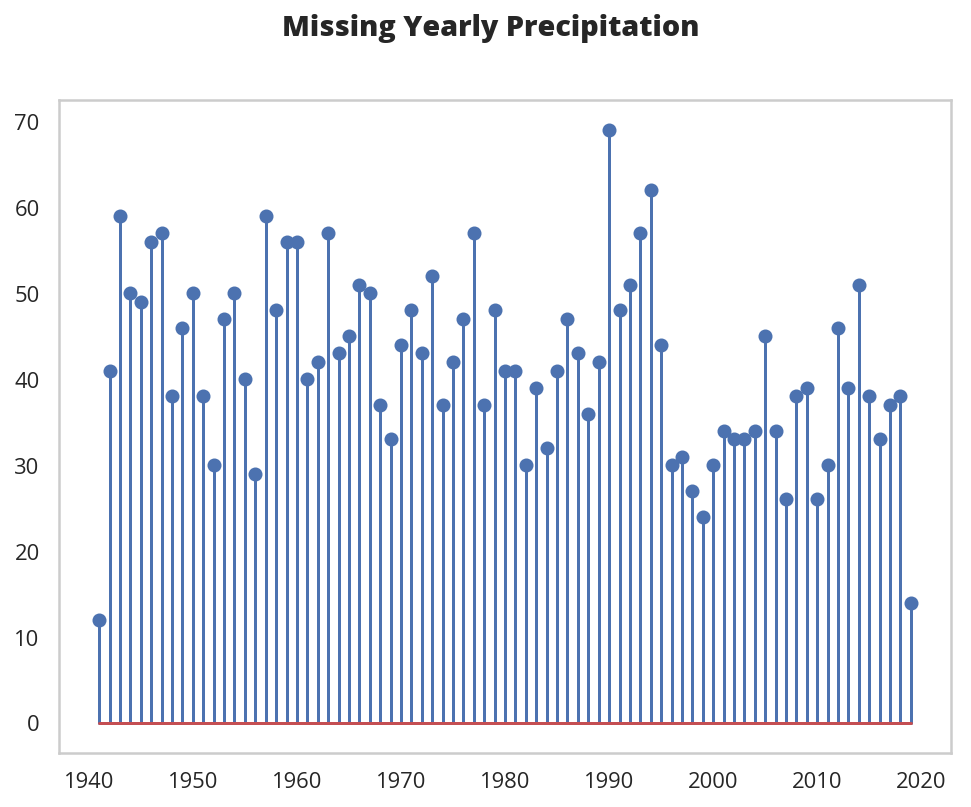
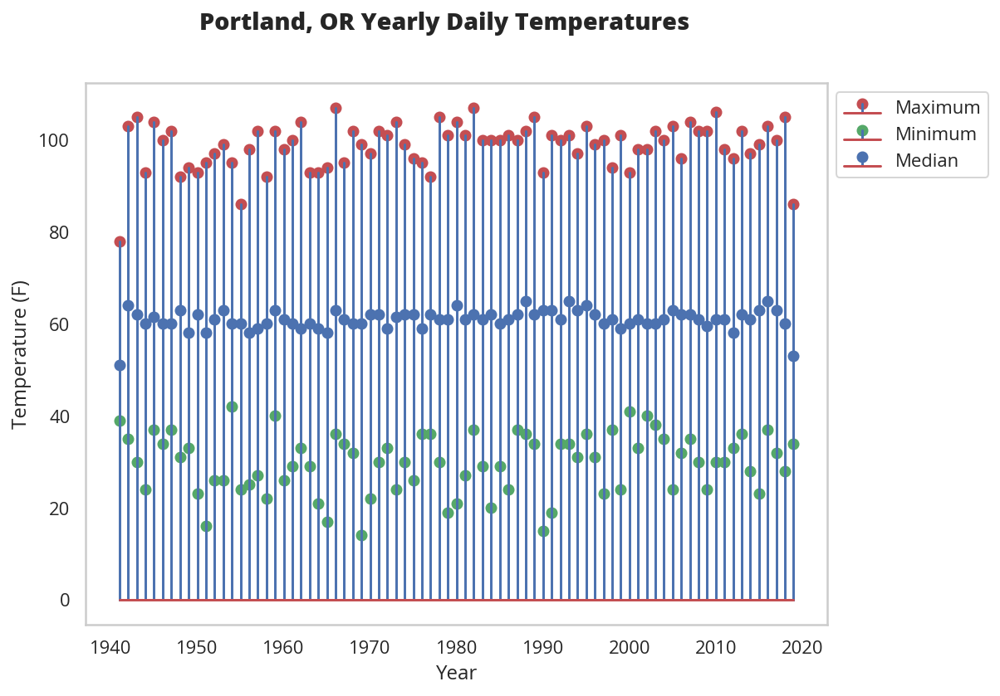

Portland Daily Temperatures Data
Table of Contents
Introduction
I'm going to work with the Daily Temperatures data set for Portland, Oregon (measured at the airport) taken from the National Weather Service. I cleaned it up a little already, removing the extra header rows and adding a missing column header (Metric) but the data is arranged with the year and month as a column and then each day is given its own column, which isn't how I want to work with it, so I'm going to transform it a little to make it more like what I expect it to look like.}
Set Up
Imports
Python
from datetime import datetime
from pathlib import Path
from typing import Union
import os
From PyPi
from dotenv import load_dotenv
import matplotlib.pyplot as pyplot
import pandas
import seaborn
Plotting
get_ipython().run_line_magic('matplotlib', 'inline')
get_ipython().run_line_magic('config', "InlineBackend.figure_format = 'retina'")
seaborn.set(style="whitegrid",
rc={"axes.grid": False,
"font.family": ["sans-serif"],
"font.sans-serif": ["Open Sans", "Latin Modern Sans", "Lato"],
"figure.figsize": (8, 6)},
font_scale=1)
Loading the Data
load_dotenv()
path = Path(os.environ.get("CSV")).expanduser()
print(path)
assert path.is_file()
/home/hades/data/datasets/necromuralist/daily-climate-data/portland_1940_to_april_2018.csv
Some Preparation
The first thing to work with is that there are three characters representing "missing" data (that I noticed) - M, T, and - - that we have to tell pandas about when we use read_csv.
missing = ["M", "T", "-"]
I was going to load the measurement type (e.g. "TX"), but I realized that I was planning to turn those into column headers so maybe it's not a good idea.
data = pandas.read_csv(path, na_values=missing)
print(data.shape)
(3756, 35)
print(data.columns)
Index(['YR', 'MO', 'Metric', '1', '2', '3', '4', '5', '6', '7', '8', '9', '10',
'11', '12', '13', '14', '15', '16', '17', '18', '19', '20', '21', '22',
'23', '24', '25', '26', '27', '28', '29', '30', '31', 'AVG or Total'],
dtype='object')
print(data.info())
<class 'pandas.core.frame.DataFrame'> RangeIndex: 3756 entries, 0 to 3755 Data columns (total 35 columns): YR 3756 non-null int64 MO 3756 non-null int64 Metric 3756 non-null object 1 3602 non-null float64 2 3554 non-null float64 3 3583 non-null float64 4 3604 non-null float64 5 3599 non-null float64 6 3610 non-null float64 7 3587 non-null object 8 3590 non-null float64 9 3595 non-null float64 10 3614 non-null float64 11 3602 non-null float64 12 3600 non-null float64 13 3583 non-null float64 14 3582 non-null float64 15 3591 non-null float64 16 3604 non-null float64 17 3598 non-null float64 18 3615 non-null float64 19 3611 non-null float64 20 3588 non-null float64 21 3606 non-null float64 22 3609 non-null float64 23 3595 non-null float64 24 3605 non-null float64 25 3598 non-null float64 26 3600 non-null float64 27 3598 non-null float64 28 3593 non-null float64 29 3371 non-null float64 30 3294 non-null float64 31 2097 non-null float64 AVG or Total 3616 non-null float64 dtypes: float64(31), int64(2), object(2) memory usage: 1.0+ MB None
For some reason column 7 wasn't converted to a float.
for index, row in enumerate(data["7"]):
try:
float(row)
except Exception as error:
print(error)
print("Row: {}".format(index))
print("Value: {}".format(row))
could not convert string to float: Row: 1835 Value:
It turns out that this one row also had a space (' ') for one of the values. Strange.
missing.append(" ")
data = pandas.read_csv(path, na_values=missing)
print(data.info())
<class 'pandas.core.frame.DataFrame'> RangeIndex: 3756 entries, 0 to 3755 Data columns (total 35 columns): YR 3756 non-null int64 MO 3756 non-null int64 Metric 3756 non-null object 1 3602 non-null float64 2 3554 non-null float64 3 3583 non-null float64 4 3604 non-null float64 5 3599 non-null float64 6 3610 non-null float64 7 3586 non-null float64 8 3590 non-null float64 9 3595 non-null float64 10 3614 non-null float64 11 3602 non-null float64 12 3600 non-null float64 13 3583 non-null float64 14 3582 non-null float64 15 3591 non-null float64 16 3604 non-null float64 17 3598 non-null float64 18 3615 non-null float64 19 3611 non-null float64 20 3588 non-null float64 21 3606 non-null float64 22 3609 non-null float64 23 3595 non-null float64 24 3605 non-null float64 25 3598 non-null float64 26 3600 non-null float64 27 3598 non-null float64 28 3593 non-null float64 29 3371 non-null float64 30 3294 non-null float64 31 2097 non-null float64 AVG or Total 3616 non-null float64 dtypes: float64(32), int64(2), object(1) memory usage: 1.0+ MB None
Cleaning
Drop the Last Column
Besides the fact that the last column is a calculated one, the fact that it's ambiguous (I guess you can tell by how big it is whether it's a Total, but still) makes me think I should get rid of the last column (using drop).
cleaned = data.drop(data.columns[-1], axis="columns")
print(cleaned.shape)
assert len(cleaned.columns) == len(data.columns) - 1
(3756, 34)
Rotate the Days
Now I'm going to move the day-columns into row-values using melt.
melted = pandas.melt(cleaned, id_vars=["YR", "MO", "Metric"], var_name="Day", value_name="Value")
print(melted.head())
YR MO Metric Day Value
0 1940 10 TX 1 NaN
1 1940 10 TN 1 NaN
2 1940 10 PR 1 NaN
3 1940 10 SN 1 NaN
4 1940 11 TX 1 52.0
print(melted.shape)
assert len(melted) == len(data) * 31
(116436, 5)
Casting the Days to Integers
Although they look like integers, the Day column was converted from column headers so they're strings. Maybe I could have cast them at the time of the conversion, but, oh, well.
print(type(melted.iloc[0].Day))
<class 'str'>
melted["Day"] = melted.Day.astype(int)
print(type(melted.iloc[0].Day))
<class 'numpy.int64'>
Make a Date Column
Now I'll make a single date column.
melted["date"] = melted.apply(lambda row: datetime(year=row.YR,
month=row.MO,
day=row.Day),
axis="columns")
print(melted.head())
That raised an error..
ValueError: ('day is out of range for month', 'occurred at index 105184')
print(melted.iloc[105184])
YR 1941 MO 2 Metric TX Day 29 Value - Name: 105184, dtype: object
Okay, so here we have a problem in that not all the dates exist. Also, for some reason the '-' didn't get converted to a NaN, but one thing at a time.
def to_datetime(row: pandas.Series) -> Union[datetime, None]:
"""Converts the row to a datetime
Args:
row: row in the dataframe with year, month, and day
Returns:
row converted to datetime or None if it isn't valid
"""
if not pandas.isnull(row.Value):
try:
return datetime(year=row.YR, month=row.MO, day=row.Day)
except ValueError as error:
print(error)
return
started = datetime.now()
melted["date"] = melted.apply(to_datetime, axis="columns")
print(melted.head())
print("Elapsed: {}".format(datetime.now() - started))
day is out of range for month
YR MO Metric Day Value date
0 1940 10 TX 1 NaN NaT
1 1940 10 TN 1 NaN NaT
2 1940 10 PR 1 NaN NaT
3 1940 10 SN 1 NaN NaT
4 1940 11 TX 1 52.0 1940-11-01
Elapsed: 0:00:09.351053
print("Fraction Missing: {:.2f}".format(
len(melted[melted.Value.isnull()])/len(melted)))
Fraction Missing: 0.06
Drop the Missing
Here I'll drop the dates that didn't have data.
cleaned = melted.dropna(subset=["Value"])
print(cleaned.head())
YR MO Metric Day Value date
4 1940 11 TX 1 52.00 1940-11-01
5 1940 11 TN 1 40.00 1940-11-01
6 1940 11 PR 1 0.17 1940-11-01
7 1940 11 SN 1 0.00 1940-11-01
8 1940 12 TX 1 51.00 1940-12-01
Drop the Extra Date Coulmns
Since we have a date column I'll get rid of the columns that made it up.
cleaned = cleaned.drop(["YR", "MO", "Day"], axis="columns")
print(cleaned.head())
Metric Value date 4 TX 52.00 1940-11-01 5 TN 40.00 1940-11-01 6 PR 0.17 1940-11-01 7 SN 0.00 1940-11-01 8 TX 51.00 1940-12-01
Figuring Out the Missing Date
One of the entries has values but no date.
print(cleaned[cleaned.date.isnull()])
Metric Value date
105427 SN 34.0 NaT
print(melted.iloc[105427])
YR 1946 MO 2 Metric SN Day 29 Value 34 date NaT Name: 105427, dtype: object
I looked it up and 1946 isn't a leap-year, so there's no February 29, 1946. Did something get lost in translation?
print(data[(data.YR==1946) & (data.MO==2)])
YR MO Metric 1 2 3 4 5 6 7 \
256 1946 2 TX 48.00 47.00 45.0 43.00 48.00 48.00 43.00
257 1946 2 TN 44.00 35.00 32.0 32.00 37.00 39.00 33.00
258 1946 2 PR 0.05 0.02 NaN 0.01 1.54 0.63 0.06
259 1946 2 SN 0.00 0.00 0.0 0.00 0.00 0.00 0.00
... 23 24 25 26 27 28 29 30 31 \
256 ... 58.0 52.00 53.0 49.00 53.00 55.00 NaN NaN NaN
257 ... 43.0 40.00 39.0 35.00 44.00 40.00 NaN NaN NaN
258 ... 0.1 0.26 NaN 0.57 0.64 0.04 NaN NaN NaN
259 ... 0.0 0.00 0.0 0.00 0.00 0.00 34.0 NaN NaN
AVG or Total
256 49.40
257 36.00
258 4.99
259 0.00
[4 rows x 35 columns]
It looks like there's something wrong with the snowfall measurement for that date, the other measurements don't have values.
print(data[(data.YR==1946) & (data.MO==2) & (data.Metric=="SN")])
YR MO Metric 1 2 3 4 5 6 7 ... 23 \
259 1946 2 SN 0.0 0.0 0.0 0.0 0.0 0.0 0.0 ... 0.0
24 25 26 27 28 29 30 31 AVG or Total
259 0.0 0.0 0.0 0.0 0.0 34.0 NaN NaN 0.0
[1 rows x 35 columns]
It was just all 0's and then there's this mysterious 34 inches of snow on the 29th of February. I'm pretty sure that's a mistake. I'll have to delete that.
Although I have the index in the original data frame I've already done all this cleaning so I think it's easier just to drop the missing dates.
rows, columns = cleaned.shape
cleaned = cleaned.dropna(subset=["date"])
assert cleaned.shape[0] == rows - 1
Pivot the Metric Column
So, besides getting the dates into a column one of the points of this was to get the metric types into columns by pivoting. I guess you could argue that this is just a category, but since each date gets all four of the values I think this makes sense.
pivoted = cleaned.pivot(index="date", columns="Metric", values="Value")
print(pivoted.head())
Metric PR SN TN TX date 1940-10-13 0.01 0.0 57.0 75.0 1940-10-14 NaN 0.0 53.0 70.0 1940-10-15 NaN 0.0 52.0 64.0 1940-10-16 0.00 0.0 50.0 72.0 1940-10-17 0.13 0.0 58.0 72.0
It looks like there's some missing precipitation data. I don't really have a solution for that. I think decisions to imput missing values should come when the data set is being used.
for metric in ("PR", "SN", "TN", "TX"):
print("{} Missing: {:,}".format(metric, len(pivoted[pivoted[metric].isnull()])))
PR Missing: 3,297 SN Missing: 523 TN Missing: 0 TX Missing: 0
So it looks like we're okay with the temperatures but maybe not so well off with the precipitation.
missing = pivoted[pivoted.PR.isnull()]
missing.loc[:, "missing"] = 1
monthly = missing.missing.resample("M")
figure, axe = pyplot.subplots()
figure.suptitle("Missing Monthly Precipitation", weight="bold")
counts = monthly.count()
stem = axe.stem(counts.index, counts)
So, I was expecting this to be a problem that happened early and then died out, but it appears there's an ongoing problem with collecting precipitation - or maybe they use a symbol for 0 that I'm interpreting as missing?
yearly = missing.missing.resample("Y")
figure, axe = pyplot.subplots()
figure.suptitle("Missing Yearly Precipitation", weight="bold")
counts = yearly.count()
stem = axe.stem(counts.index, counts)

This does seem problematic, if I do anything with precipitation I'll have to figure out what's going on here.
Updating the Columns
The whole TX, TN, etc. encoding scheme seems like it causes too much mental overhead so I'm going to rename the metric columns.
renamed = pivoted.rename(dict(PR="precipitation",
SN="snowfall",
TN="minimum_temperature",
TX="maximum_temperature"),
axis="columns")
print(renamed.head())
Metric precipitation snowfall minimum_temperature maximum_temperature date 1940-10-13 0.01 0.0 57.0 75.0 1940-10-14 NaN 0.0 53.0 70.0 1940-10-15 NaN 0.0 52.0 64.0 1940-10-16 0.00 0.0 50.0 72.0 1940-10-17 0.13 0.0 58.0 72.0
Save the Message Pack
Now that we have the cleaned-up data, I'll save it as a message pack.
pack_path = Path(os.environ.get("MESSAGE_PACK")).expanduser()
print(pack_path)
/home/hades/pCloudDrive/data/daily-climate-data/portland_1940_to_april_2018.msg
renamed.to_msgpack(pack_path)
assert pack_path.is_file()
Looking at Some Plots
maximum_temperature = renamed.maximum_temperature.resample("Y")
medians = maximum_temperature.median()
maxes = maximum_temperature.max()
mins = maximum_temperature.min()
figure, axe = pyplot.subplots()
figure.suptitle("Portland, OR Yearly Maximum Daily Temperatures", weight="bold")
axe.stem(maxes.index, maxes, markerfmt="ro",label="Maximum")
axe.stem(mins.index, mins, markerfmt="go", label="Minimum")
stem = axe.stem(medians.index, medians, label="Median")
legend = axe.legend(bbox_to_anchor=(1, 1))
